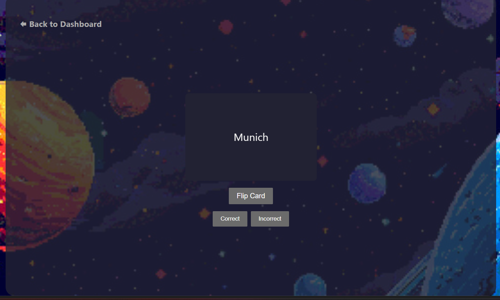
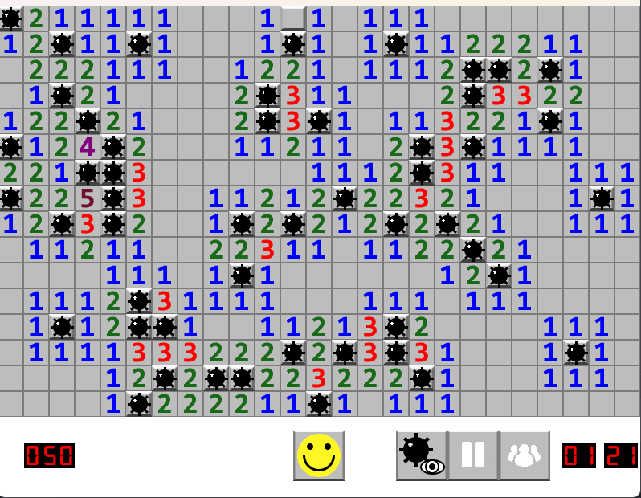

QuizLit

Designed and implemented an extensive login interface that accounted for form validation, error diagnostics, authentication indication models, and redirection logic and rendered in React Query.
Designed the main dashboard page, including a responsive grid layout used in navigation, user statistic (streak tracker) area, quick-action cards, and dynamic navigation between the dashboard, study, profile and study set pages.
Implemented large-scale profile functionalities, including renders of user profiles, editable descriptions with character restrictions, profile personalization, administrative features and contextual interaction menu.
Created dynamic, CSS-based layouts using current design trends, such as card based design, gradient styling, hover effects and mobile breakpoints in all executed pages.
The Searchers Performance Study
Formulated a command line based user interface using C++, allowing for a user-friendly experience when comparing Jump Search and Interpolation Search algorithms.
Applied UI elements to provide integral implementation of all project functions, involved dataset loading, generation and two search algorithms, to have an easy work of the user.
Fixed all the main application logic to respond to a user input when using the Interpolation Search functionality and make sure that the algorithm is correctly called, and performance data is printed as a part of the comparison framework.
Minesweeper

Designed and implemented a fully functional Minesweeper game using C++ and SFML within the CLion IDE.
Developed features including dynamic grid sizing, mine placement logic, timer, pause/resume functionality, and leaderboard tracking.
Employed object-oriented design principles, modular code structure, and effective texture/sprite management for smooth gameplay and UI.
Integrated file I/O for configuration and leaderboard data persistence.
Lizard Game


Designed and developed an engaging grid-based game in Java, where players control a lizard navigating through a dynamically changing environment. Each lizard is modeled as a series of connected body segments, mimicking “snake-like” movement patterns.
Engineered a robust grid management system within the LizardGame class, facilitating interactions between the lizard, walls, exits, and various other grid objects, enhancing game complexity and player engagement.
Implemented comprehensive game mechanics, including lizard movement constrained by grid boundaries, collision detection with walls and exits, and responsive adjustments of the lizard’s body direction based on user input.
Incorporated listener-based event handling to update game states in real-time, managing score updates and triggering player notifications during key events (e.g., winning the game or colliding with obstacles).
Utilized JUnit for rigorous testing of game functionalities, ensuring reliable collision handling, accurate movement constraints, and seamless game flow.